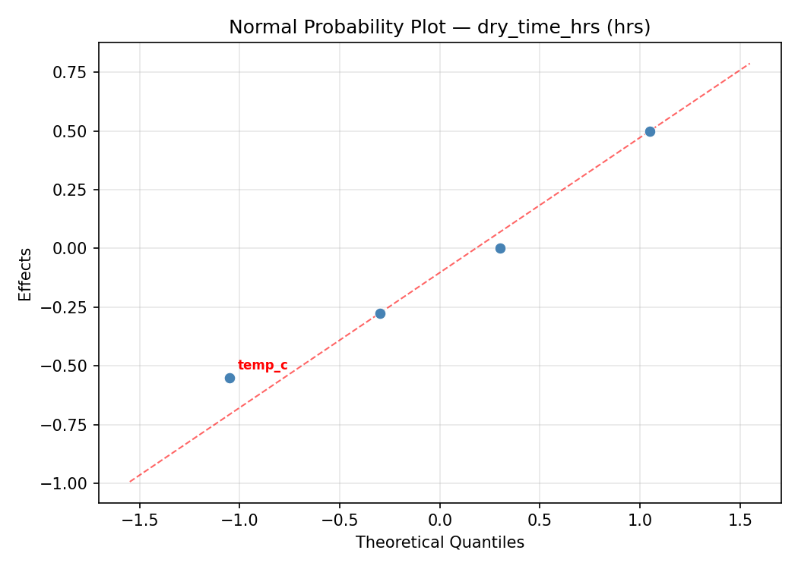
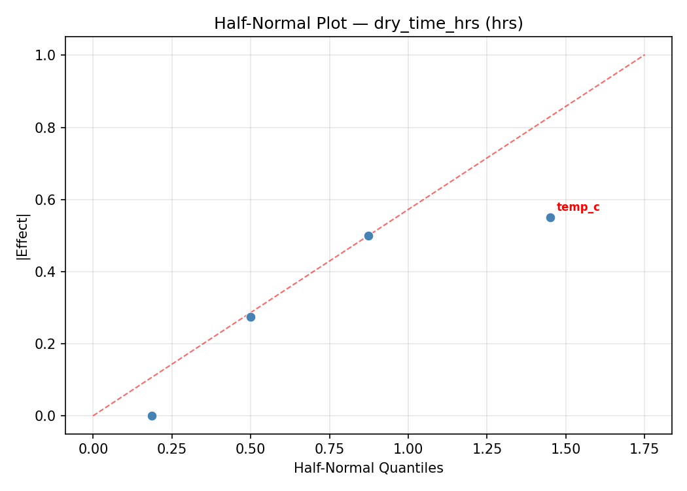
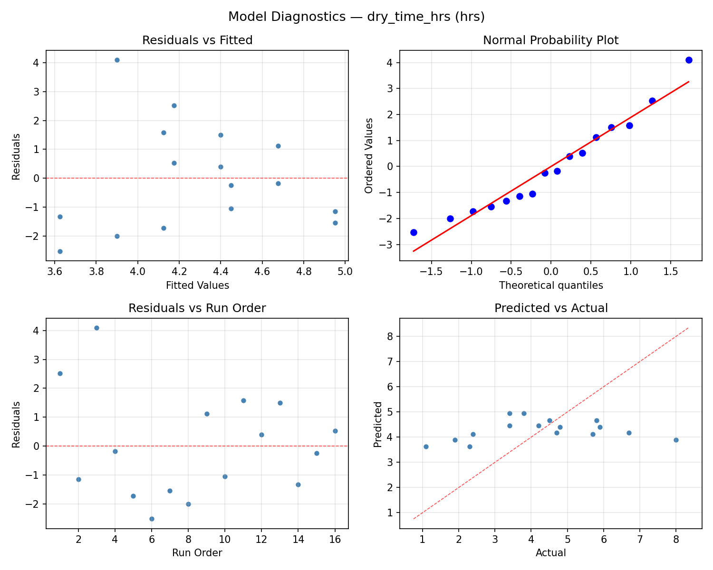
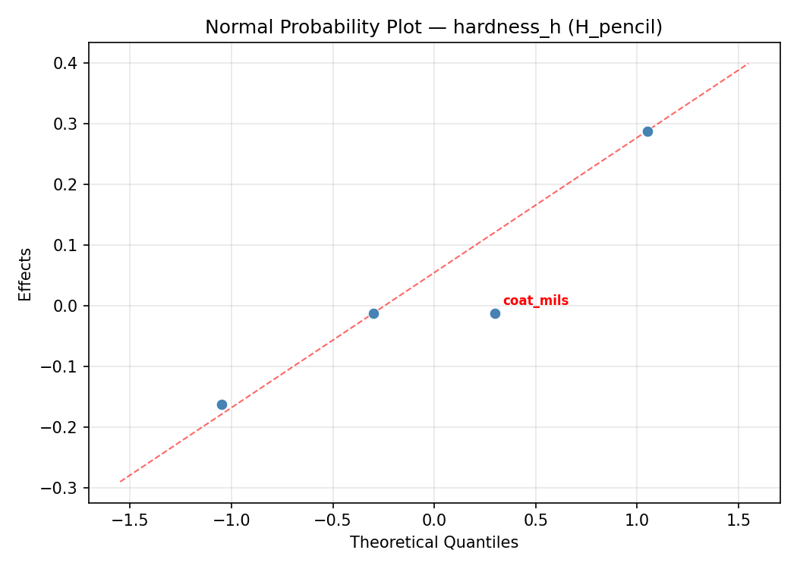
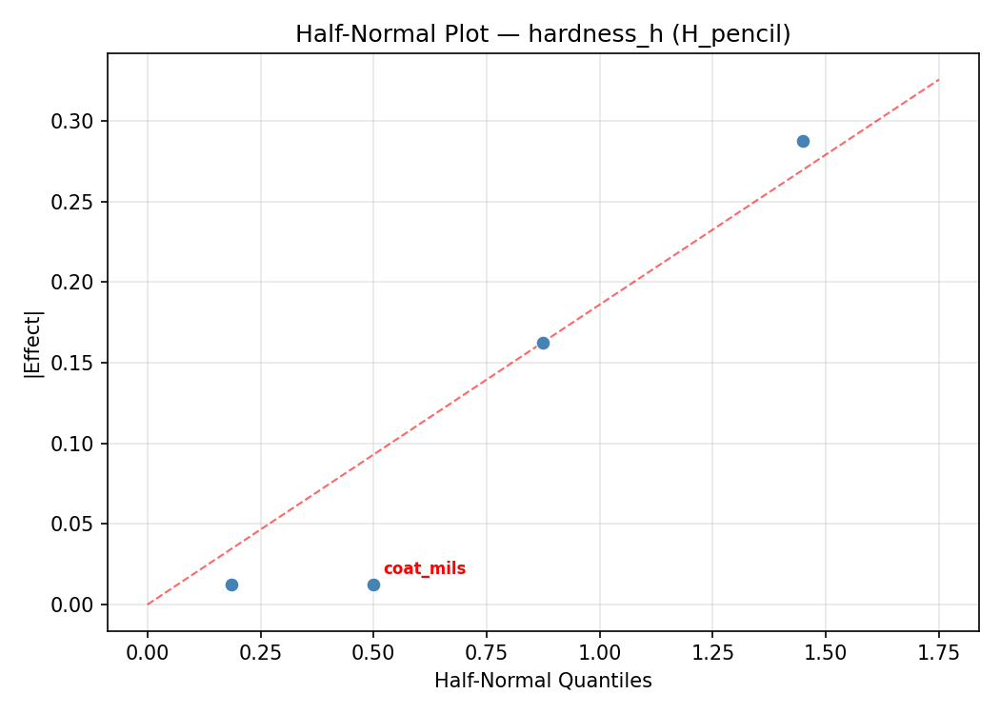
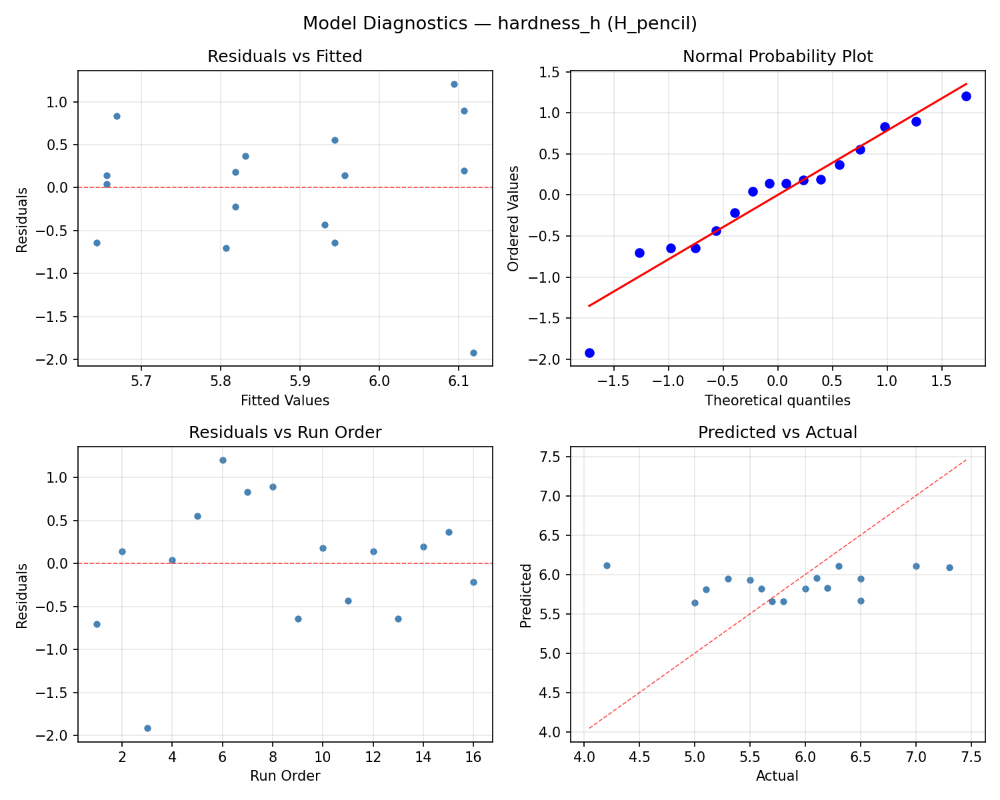

Summary
This experiment investigates wood finish drying conditions. Full factorial of temperature, humidity, air circulation, and coat thickness to minimize drying time and maximize film hardness.
The design varies 4 factors: temp c (C), ranging from 15 to 30, humidity pct (%), ranging from 30 to 70, air flow, ranging from off to on, and coat mils (mils), ranging from 2 to 6. The goal is to optimize 2 responses: dry time hrs (hrs) (minimize) and hardness h (H_pencil) (maximize). Fixed conditions held constant across all runs include finish type = polyurethane, wood = cherry.
A full factorial design was used to explore all 16 possible combinations of the 4 factors at two levels. This guarantees that every main effect and interaction can be estimated independently, at the cost of a larger experiment (16 runs).
Quadratic response surface models were fitted to capture potential curvature and factor interactions. The RSM contour plots below visualize how pairs of factors jointly affect each response.
Key Findings
For dry time hrs, the most influential factors were coat mils (49.4%), temp c (23.2%), air flow (20.2%). The best observed value was 1.1 (at temp c = 30, humidity pct = 30, air flow = off).
For hardness h, the most influential factors were coat mils (40.4%), temp c (33.1%), air flow (24.3%). The best observed value was 7.3 (at temp c = 30, humidity pct = 30, air flow = off).
Recommended Next Steps
- Consider whether any fixed factors should be varied in a future study.
Experimental Setup
Factors
| Factor | Low | High | Unit |
|---|
temp_c | 15 | 30 | C |
humidity_pct | 30 | 70 | % |
air_flow | off | on | |
coat_mils | 2 | 6 | mils |
Fixed: finish_type = polyurethane, wood = cherry
Responses
| Response | Direction | Unit |
|---|
dry_time_hrs | ↓ minimize | hrs |
hardness_h | ↑ maximize | H_pencil |
Configuration
{
"metadata": {
"name": "Wood Finish Drying Conditions",
"description": "Full factorial of temperature, humidity, air circulation, and coat thickness to minimize drying time and maximize film hardness"
},
"factors": [
{
"name": "temp_c",
"levels": [
"15",
"30"
],
"type": "continuous",
"unit": "C"
},
{
"name": "humidity_pct",
"levels": [
"30",
"70"
],
"type": "continuous",
"unit": "%"
},
{
"name": "air_flow",
"levels": [
"off",
"on"
],
"type": "categorical",
"unit": ""
},
{
"name": "coat_mils",
"levels": [
"2",
"6"
],
"type": "continuous",
"unit": "mils"
}
],
"fixed_factors": {
"finish_type": "polyurethane",
"wood": "cherry"
},
"responses": [
{
"name": "dry_time_hrs",
"optimize": "minimize",
"unit": "hrs"
},
{
"name": "hardness_h",
"optimize": "maximize",
"unit": "H_pencil"
}
],
"settings": {
"operation": "full_factorial",
"test_script": "use_cases/201_wood_finish_drying/sim.sh"
}
}
Experimental Matrix
The Full Factorial Design produces 16 runs. Each row is one experiment with specific factor settings.
| Run | temp_c | humidity_pct | air_flow | coat_mils |
|---|
| 1 | 15 | 70 | on | 6 |
| 2 | 30 | 30 | off | 6 |
| 3 | 15 | 70 | off | 6 |
| 4 | 15 | 70 | on | 2 |
| 5 | 30 | 70 | on | 2 |
| 6 | 30 | 30 | on | 2 |
| 7 | 30 | 70 | off | 2 |
| 8 | 30 | 30 | off | 2 |
| 9 | 15 | 30 | off | 6 |
| 10 | 15 | 30 | on | 2 |
| 11 | 30 | 70 | off | 6 |
| 12 | 30 | 70 | on | 6 |
| 13 | 15 | 70 | off | 2 |
| 14 | 30 | 30 | on | 6 |
| 15 | 15 | 30 | off | 2 |
| 16 | 15 | 30 | on | 6 |
Step-by-Step Workflow
1
Preview the design
$ python doe.py info --config use_cases/201_wood_finish_drying/config.json
2
Generate the runner script
$ python doe.py generate --config use_cases/201_wood_finish_drying/config.json \
--output use_cases/201_wood_finish_drying/results/run.sh --seed 42
3
Execute the experiments
$ bash use_cases/201_wood_finish_drying/results/run.sh
4
Analyze results
$ python doe.py analyze --config use_cases/201_wood_finish_drying/config.json
5
Get optimization recommendations
$ python doe.py optimize --config use_cases/201_wood_finish_drying/config.json
6
Multi-objective optimization
With 2 competing responses, use --multi to find the best compromise via Derringer–Suich desirability.
$ python doe.py optimize --config use_cases/201_wood_finish_drying/config.json --multi
7
Generate the HTML report
$ python doe.py report --config use_cases/201_wood_finish_drying/config.json \
--output use_cases/201_wood_finish_drying/results/report.html
Features Exercised
| Feature | Value |
|---|
| Design type | full_factorial |
| Factor types | continuous (3), categorical (1) |
| Arg style | double-dash |
| Responses | 2 (dry_time_hrs ↓, hardness_h ↑) |
| Total runs | 16 |
Analysis Results
Generated from actual experiment runs using the DOE Helper Tool.
Response: dry_time_hrs
Top factors: coat_mils (49.4%), temp_c (23.2%), air_flow (20.2%).
ANOVA
| Source | DF | SS | MS | F | p-value |
|---|
| Source | DF | SS | MS | F | p-value |
| temp_c | 1 | 3.8025 | 3.8025 | 1.758 | 0.2423 |
| humidity_pct | 1 | 0.3600 | 0.3600 | 0.166 | 0.7002 |
| air_flow | 1 | 2.8900 | 2.8900 | 1.336 | 0.3000 |
| coat_mils | 1 | 17.2225 | 17.2225 | 7.960 | 0.0370 |
| temp_c*humidity_pct | 1 | 0.8100 | 0.8100 | 0.374 | 0.5674 |
| temp_c*air_flow | 1 | 1.2100 | 1.2100 | 0.559 | 0.4882 |
| temp_c*coat_mils | 1 | 0.0625 | 0.0625 | 0.029 | 0.8717 |
| humidity_pct*air_flow | 1 | 10.5625 | 10.5625 | 4.882 | 0.0781 |
| humidity_pct*coat_mils | 1 | 4.4100 | 4.4100 | 2.038 | 0.2127 |
| air_flow*coat_mils | 1 | 0.0100 | 0.0100 | 0.005 | 0.9484 |
| Error | 5 | 10.8175 | 2.1635 | | |
| Total | 15 | 52.1575 | 3.4772 | | |
Pareto Chart

Main Effects Plot

Normal Probability Plot of Effects

Half-Normal Plot of Effects

Model Diagnostics

Response: hardness_h
Top factors: coat_mils (40.4%), temp_c (33.1%), air_flow (24.3%).
ANOVA
| Source | DF | SS | MS | F | p-value |
|---|
| Source | DF | SS | MS | F | p-value |
| temp_c | 1 | 1.2656 | 1.2656 | 2.493 | 0.1752 |
| humidity_pct | 1 | 0.0056 | 0.0056 | 0.011 | 0.9203 |
| air_flow | 1 | 0.6806 | 0.6806 | 1.341 | 0.2992 |
| coat_mils | 1 | 1.8906 | 1.8906 | 3.724 | 0.1115 |
| temp_c*humidity_pct | 1 | 0.0756 | 0.0756 | 0.149 | 0.7154 |
| temp_c*air_flow | 1 | 0.0156 | 0.0156 | 0.031 | 0.8676 |
| temp_c*coat_mils | 1 | 0.0006 | 0.0006 | 0.001 | 0.9734 |
| humidity_pct*air_flow | 1 | 1.7556 | 1.7556 | 3.459 | 0.1220 |
| humidity_pct*coat_mils | 1 | 0.9506 | 0.9506 | 1.873 | 0.2295 |
| air_flow*coat_mils | 1 | 0.0056 | 0.0056 | 0.011 | 0.9203 |
| Error | 5 | 2.5381 | 0.5076 | | |
| Total | 15 | 9.1844 | 0.6123 | | |
Pareto Chart

Main Effects Plot

Normal Probability Plot of Effects

Half-Normal Plot of Effects

Model Diagnostics

Response Surface Plots
3D surfaces fitted with quadratic RSM. Red dots are observed data points.
dry time hrs humidity pct vs coat mils

dry time hrs temp c vs coat mils

dry time hrs temp c vs humidity pct

hardness h humidity pct vs coat mils

hardness h temp c vs coat mils

hardness h temp c vs humidity pct

Multi-Objective Optimization
When responses compete, Derringer–Suich desirability finds the best compromise.
Each response is scaled to a 0–1 desirability, then combined via a weighted geometric mean.
Overall Desirability
D = 0.9545
Per-Response Desirability
| Response | Weight | Desirability | Predicted | Dir |
|---|
dry_time_hrs |
1.0 |
|
1.10 0.9545 1.10 hrs |
↓ |
hardness_h |
1.5 |
|
7.30 0.9545 7.30 H_pencil |
↑ |
Recommended Settings
| Factor | Value |
|---|
temp_c | 15 C |
humidity_pct | 70 % |
air_flow | on |
coat_mils | 2 mils |
Source: from observed run #6
Trade-off Summary
Sacrifice = how much worse than single-objective best.
| Response | Predicted | Best Observed | Sacrifice |
|---|
hardness_h | 7.30 | 7.30 | +0.00 |
Top 3 Runs by Desirability
| Run | D | Factor Settings |
|---|
| #8 | 0.8596 | temp_c=30, humidity_pct=30, air_flow=on, coat_mils=6 |
| #5 | 0.7446 | temp_c=30, humidity_pct=70, air_flow=off, coat_mils=2 |
Model Quality
| Response | R² | Type |
|---|
hardness_h | 0.2654 | linear |
Full Multi-Objective Output
============================================================
MULTI-OBJECTIVE OPTIMIZATION
Method: Derringer-Suich Desirability Function
============================================================
Overall desirability: D = 0.9545
Response Weight Desirability Predicted Direction
---------------------------------------------------------------------
dry_time_hrs 1.0 0.9545 1.10 hrs ↓
hardness_h 1.5 0.9545 7.30 H_pencil ↑
Recommended settings:
temp_c = 15 C
humidity_pct = 70 %
air_flow = on
coat_mils = 2 mils
(from observed run #6)
Trade-off summary:
dry_time_hrs: 1.10 (best observed: 1.10, sacrifice: +0.00)
hardness_h: 7.30 (best observed: 7.30, sacrifice: +0.00)
Model quality:
dry_time_hrs: R² = 0.3949 (linear)
hardness_h: R² = 0.2654 (linear)
Top 3 observed runs by overall desirability:
1. Run #6 (D=0.9545): temp_c=15, humidity_pct=70, air_flow=on, coat_mils=2
2. Run #8 (D=0.8596): temp_c=30, humidity_pct=30, air_flow=on, coat_mils=6
3. Run #5 (D=0.7446): temp_c=30, humidity_pct=70, air_flow=off, coat_mils=2
Full Analysis Output
=== Main Effects: dry_time_hrs ===
Factor Effect Std Error % Contribution
--------------------------------------------------------------
coat_mils -2.0750 0.4662 49.4%
temp_c -0.9750 0.4662 23.2%
air_flow -0.8500 0.4662 20.2%
humidity_pct -0.3000 0.4662 7.1%
=== ANOVA Table: dry_time_hrs ===
Source DF SS MS F p-value
-----------------------------------------------------------------------------
temp_c 1 3.8025 3.8025 1.758 0.2423
humidity_pct 1 0.3600 0.3600 0.166 0.7002
air_flow 1 2.8900 2.8900 1.336 0.3000
coat_mils 1 17.2225 17.2225 7.960 0.0370
temp_c*humidity_pct 1 0.8100 0.8100 0.374 0.5674
temp_c*air_flow 1 1.2100 1.2100 0.559 0.4882
temp_c*coat_mils 1 0.0625 0.0625 0.029 0.8717
humidity_pct*air_flow 1 10.5625 10.5625 4.882 0.0781
humidity_pct*coat_mils 1 4.4100 4.4100 2.038 0.2127
air_flow*coat_mils 1 0.0100 0.0100 0.005 0.9484
Error 5 10.8175 2.1635
Total 15 52.1575 3.4772
=== Interaction Effects: dry_time_hrs ===
Factor A Factor B Interaction % Contribution
------------------------------------------------------------------------
humidity_pct air_flow 1.6250 42.2%
humidity_pct coat_mils 1.0500 27.3%
temp_c air_flow -0.5500 14.3%
temp_c humidity_pct -0.4500 11.7%
temp_c coat_mils -0.1250 3.2%
air_flow coat_mils -0.0500 1.3%
=== Summary Statistics: dry_time_hrs ===
temp_c:
Level N Mean Std Min Max
------------------------------------------------------------
15 8 4.7750 2.0700 1.1000 8.0000
30 8 3.8000 1.6195 1.9000 6.7000
humidity_pct:
Level N Mean Std Min Max
------------------------------------------------------------
30 8 4.4375 2.2922 1.1000 8.0000
70 8 4.1375 1.4648 1.9000 5.8000
air_flow:
Level N Mean Std Min Max
------------------------------------------------------------
off 8 4.7125 1.8303 2.3000 8.0000
on 8 3.8625 1.9205 1.1000 5.9000
coat_mils:
Level N Mean Std Min Max
------------------------------------------------------------
2 8 5.3250 1.5854 3.4000 8.0000
6 8 3.2500 1.5739 1.1000 5.8000
=== Main Effects: hardness_h ===
Factor Effect Std Error % Contribution
--------------------------------------------------------------
coat_mils 0.6875 0.1956 40.4%
temp_c 0.5625 0.1956 33.1%
air_flow 0.4125 0.1956 24.3%
humidity_pct 0.0375 0.1956 2.2%
=== ANOVA Table: hardness_h ===
Source DF SS MS F p-value
-----------------------------------------------------------------------------
temp_c 1 1.2656 1.2656 2.493 0.1752
humidity_pct 1 0.0056 0.0056 0.011 0.9203
air_flow 1 0.6806 0.6806 1.341 0.2992
coat_mils 1 1.8906 1.8906 3.724 0.1115
temp_c*humidity_pct 1 0.0756 0.0756 0.149 0.7154
temp_c*air_flow 1 0.0156 0.0156 0.031 0.8676
temp_c*coat_mils 1 0.0006 0.0006 0.001 0.9734
humidity_pct*air_flow 1 1.7556 1.7556 3.459 0.1220
humidity_pct*coat_mils 1 0.9506 0.9506 1.873 0.2295
air_flow*coat_mils 1 0.0056 0.0056 0.011 0.9203
Error 5 2.5381 0.5076
Total 15 9.1844 0.6123
=== Interaction Effects: hardness_h ===
Factor A Factor B Interaction % Contribution
------------------------------------------------------------------------
humidity_pct air_flow -0.6625 47.3%
humidity_pct coat_mils -0.4875 34.8%
temp_c humidity_pct 0.1375 9.8%
temp_c air_flow 0.0625 4.5%
air_flow coat_mils 0.0375 2.7%
temp_c coat_mils -0.0125 0.9%
=== Summary Statistics: hardness_h ===
temp_c:
Level N Mean Std Min Max
------------------------------------------------------------
15 8 5.6000 0.8880 4.2000 7.3000
30 8 6.1625 0.5854 5.1000 7.0000
humidity_pct:
Level N Mean Std Min Max
------------------------------------------------------------
30 8 5.8625 0.9753 4.2000 7.3000
70 8 5.9000 0.6000 5.0000 7.0000
air_flow:
Level N Mean Std Min Max
------------------------------------------------------------
off 8 5.6750 0.7046 4.2000 6.3000
on 8 6.0875 0.8476 5.0000 7.3000
coat_mils:
Level N Mean Std Min Max
------------------------------------------------------------
2 8 5.5375 0.7070 4.2000 6.5000
6 8 6.2250 0.7363 5.0000 7.3000
Optimization Recommendations
=== Optimization: dry_time_hrs ===
Direction: minimize
Best observed run: #6
temp_c = 30
humidity_pct = 30
air_flow = off
coat_mils = 2
Value: 1.1
RSM Model (linear, R² = 0.3227, Adj R² = 0.0764):
Coefficients:
intercept +4.2875
temp_c -0.5000
humidity_pct +0.5250
air_flow +0.7250
coat_mils +0.0250
RSM Model (quadratic, R² = 0.5787, Adj R² = -5.3191):
Coefficients:
intercept +0.8575
temp_c -0.5000
humidity_pct +0.5250
air_flow +0.7250
coat_mils +0.0250
temp_c*humidity_pct -0.1125
temp_c*air_flow +0.3875
temp_c*coat_mils +0.3125
humidity_pct*air_flow +0.2375
humidity_pct*coat_mils +0.6875
air_flow*coat_mils +0.2125
temp_c^2 +0.8575
humidity_pct^2 +0.8575
air_flow^2 +0.8575
coat_mils^2 +0.8575
Curvature analysis:
temp_c coef=+0.8575 convex (has a minimum)
humidity_pct coef=+0.8575 convex (has a minimum)
coat_mils coef=+0.8575 convex (has a minimum)
air_flow coef=+0.8575 convex (has a minimum)
Notable interactions:
humidity_pct*coat_mils coef=+0.6875 (synergistic)
temp_c*air_flow coef=+0.3875 (synergistic)
temp_c*coat_mils coef=+0.3125 (synergistic)
Predicted optimum (from linear model, at observed points):
temp_c = 15
humidity_pct = 70
air_flow = on
coat_mils = 6
Predicted value: 6.0625
Surface optimum (via L-BFGS-B, linear model):
temp_c = 30
humidity_pct = 30
air_flow = off
coat_mils = 2
Predicted value: 2.5125
Model quality: Weak fit — consider adding center points or using a different design.
Factor importance:
1. air_flow (effect: 1.5, contribution: 40.8%)
2. humidity_pct (effect: 1.0, contribution: 29.6%)
3. temp_c (effect: -1.0, contribution: 28.2%)
4. coat_mils (effect: 0.0, contribution: 1.4%)
=== Optimization: hardness_h ===
Direction: maximize
Best observed run: #6
temp_c = 30
humidity_pct = 30
air_flow = off
coat_mils = 2
Value: 7.3
RSM Model (linear, R² = 0.3841, Adj R² = 0.1601):
Coefficients:
intercept +5.8813
temp_c +0.2187
humidity_pct -0.3063
air_flow -0.2688
coat_mils -0.0813
RSM Model (quadratic, R² = 0.5179, Adj R² = -6.2321):
Coefficients:
intercept +1.1763
temp_c +0.2188
humidity_pct -0.3063
air_flow -0.2688
coat_mils -0.0813
temp_c*humidity_pct +0.0062
temp_c*air_flow -0.0312
temp_c*coat_mils -0.0438
humidity_pct*air_flow -0.1062
humidity_pct*coat_mils -0.2438
air_flow*coat_mils -0.0563
temp_c^2 +1.1763
humidity_pct^2 +1.1763
air_flow^2 +1.1763
coat_mils^2 +1.1763
Curvature analysis:
coat_mils coef=+1.1763 convex (has a minimum)
temp_c coef=+1.1763 convex (has a minimum)
humidity_pct coef=+1.1763 convex (has a minimum)
air_flow coef=+1.1763 convex (has a minimum)
Predicted optimum (from linear model, at observed points):
temp_c = 30
humidity_pct = 30
air_flow = off
coat_mils = 2
Predicted value: 6.7563
Surface optimum (via L-BFGS-B, linear model):
temp_c = 30
humidity_pct = 30
air_flow = off
coat_mils = 2
Predicted value: 6.7563
Model quality: Weak fit — consider adding center points or using a different design.
Factor importance:
1. humidity_pct (effect: -0.6, contribution: 35.0%)
2. air_flow (effect: -0.5, contribution: 30.7%)
3. temp_c (effect: 0.4, contribution: 25.0%)
4. coat_mils (effect: -0.2, contribution: 9.3%)